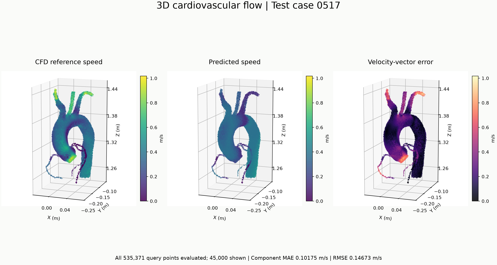

Scientific machine learning / Test case 0517
3D cardiovascular flow.
A pretrained point-cloud network, compared with its CFD reference. Original predictions and their errors are shown together. Tap the figure to open the full-resolution image.
535,371query points evaluated
0.10175 m/svelocity-component MAE
0.14673 m/svelocity-component RMSE

Left: CFD reference · Center: model prediction · Right: velocity-vector error. Reference and prediction use the same physical color scale. 45,000 points shown.What this result shows
The global shape is preserved while several branches show visible velocity discrepancies. This is one test case; no claim of clinical validity or generalization follows from this figure. Values and colors have not been manually adjusted.
Reproduction and source
Inference uses the supplied HDF5 weights and CSV pair with a NumPy implementation of the provided network. It has not yet been cross-validated against the original TensorFlow runtime. The repository contains a reproduction script; the checkpoint and raw data are not redistributed.
Read the full methodology and source attribution ↗